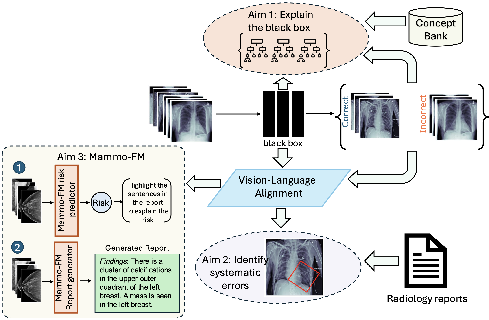

I am a lifelong proud gator
and a
Ph.D. candidate in Electrical Engineering at
Boston
University,
advised by Prof.
Kayhan Batmanghelich at
Batman Lab and
Dr. Clare B. Poynton from
Boston University Medical Campus.
My research focuses on robustness and generalization in deep learning, with a particular
emphasis on leveraging
vision-language representations to understand, explain, and audit pre-trained neural networks.
My work has been published
at top peer-reviewed venues including ACL, NAACL, ICML, MICCAI, AMIA, JAMIA, and RAD:AI. I
believe that understanding a
model’s behavior is essential to mitigating bias and building trust in AI systems.
Before our lab moved to Boston, I was a Ph.D. student in the Intelligent Systems Program (ISP)
at the
University of Pittsburgh. While at Pitt, I used to
collaborate closely with
Dr. Forough Arabshahi from Meta, Inc. At Pitt, I was
also a cross-registered
student at Carnegie Mellon University, where I registered for
the courses Foundations of
Causation and Machine Learning (PHI 80625) and
Visual Learning and Recognition (RI 16-824).
In the summers of 2024 and 2025,
I interned as an Applied Scientist at Amazon (AWS SAAR and AWS Optimus) in New York City and
Pasadena, where I developed methods
for learning robust representations in self-supervised models and auditing biases in AI coding
agents.
I aim to develop medical imaging AI systems from first principles: systems that do not merely
achieve high benchmark
performance, but that support clinically meaningful reasoning, expose their limitations, and earn
trust
through
transparency. I view scale as a powerful tool, but not a complete solution. Large pretrained models
can encode rich representations,
yet they can also exhibit systematic mistakes driven by spurious
correlations. My
research studies how to detect these failure modes, diagnose their causes, and design interventions
that improve
reliability and robustness in real clinical settings.
I organize my research along two pillars:
Algorithms:
interpretable and trustworthy ML via vision–language alignment and causal reasoning,
enabling failure mode
discovery of pre-trained blackboxes using free-form clinical language.
Applications:
breast imaging foundation models, where I study the benefits of domain-specific vision–language
over
generalist models for cancer detection, prognosis, and radiology report generation.
Throughout my Ph.D., I am to answer the following high-impact questions:
Can we decipher the failure modes of a deep model through multimodal vision-language
representations and large language models (LLMs) for improved reliability and debugging?
([LADDER (ACL
2025)])
Can we learn robust representations in presence of multiple biases for tabular data?
[Amazon internship work (TRL
workshop@NeurIPS 2024)]
Can we build robust foundation models for breast cancer detection and radiology report
generation?
[Mammo-CLIP (MICCAI
2024, top 11%) + Mammo-FM (ArXiv,
2025)]
Can we extract symbolic rules from the representation of a blackbox model
using human interpretable concepts?
[MoIE (ICML 2023 +
SCIS@ICML 2023)]
Can we use robust mixture of interpretable models for data and computationally efficient
transfer learning?
[MoIE-CXR (MICCAI
2023, top 14% + IMLH@ICML 2023)]
Can we leverage radiology reports localizing a disease and its progression without ground-truth
bounding box annotation?
[AGXNet (MICCAI
2022 + RAD: AI)]
For an overview of my Ph.D. thesis refer below:

At UF, I was interested broadly in biomedical informatics with a focus on causal inference. I
developed deep learning models, namely
DPN-SA
(JAMIA 2021),
PSSAM-GAN
(CMPB-U 2021)
and DR-VIDAL (AMIA 2022, oral),
to compute propensity scores
for the efficient estimation of individual treatment effects (ITE). For a detailed overview of my
Master's research, refer to the slides available at this
link.
Deep Learning Resources
My friend Kalpak Seal and I have developed a comprehensive
repository
where you can access a curated collection of academic lecture videos focused on machine learning,
deep learning, computer vision, and natural language processing (NLP).
If you're interested in contributing to this resource, feel free to collaborate with us by
submitting a pull request.
Whether it's adding new lecture videos or improving the existing structure, we welcome all
contributions!
News
[Jan 2026] Defended my PhD Proposal today successfully.
Here are the slides.
[May 2025]Ladder
is accepted at ACL 2025. Using
LLM, Ladder detects the blind spots of deep learning classifiers where it makes systematic
mistakes.
Code is available here. I'm also
joining as an Applied Scientist Intern at Amazon AWS Optimus Team in Pasadena, CA under the
supervision of
Dr. Ankan Bansal.
[Jan 2025]
Our collaborative work to reduce hallucination
for CXR report generation is accepted at
NAACL 2025 Findings.
[Jun 2024]
I'm joining as an Applied Scientist Intern at Amazon Web Services (AWS) Security Analytics and
AI Research (SAAR) Team in New York City under the supervision of
Dr. Mikhail Kuznetsov.
My project aims at learning robust representations to mitigate systematic errors in
self-supervised models.
[May 2024]Mammo-CLIP
is accepted (Early accept, top 11% out of 2,869 submissions)
at
MICCAI 2024.
It is the first vision language model trained with mammogram+report pairs of real patients.
Code and checkpoints are available here.
[Jun 2023] I'm now a Ph.D. candidate. Also, two papers are
accepted at SCIS
and IMLH
workshops at ICML 2023.
[Dec 2022] I'm joining Boston
University in Spring 2023 in the Department of Electrical and Computer Engineering following
my advisor's move. My research will be supported by Doctoral Research Fellowship.
[Jun 2022] Our work on doubly robust estimation of ITE is
accepted as an oral presentation at the AMIA
2022 Annual Symposium.
[Jun 2022] Our work on weakly supervised disease localization is
accepted at MICCAI 2022.
TL;DR: A model-agnostic, plug-and-play uncertainty framework
enhances radiology report factuality by 10% via semantic consistency-based hallucination
detection—no model access or modifications required.
Distributionally robust self-supervised learning for tabular data
TL;DR: This paper presents a framework for robust
representation learning in tabular data using self-supervised pre-training (MLM) and bias-aware
fine-tuning (e.g., JTT/DFR) to address systematic errors and improve generalization across
subpopulations.
Anatomy-specific Progression Classification in Chest Radiographs via Weakly
Supervised Learning
TL;DR: This study developed a weakly supervised model to
classify and localize disease progression in chest radiographs, showing strong performance
across various pathologies.
Mammo-CLIP: A Vision Language Foundation Model to Enhance Data Efficiency
and Robustness in Mammography
TL;DR: Mammo-CLIP is a vision–language model for mammography
that supports breast cancer detection and sentence-level feature attribution via Mammo-FActOR.
Distilling BlackBox to Interpretable models for Efficient Transfer
Learning
TL;DR: An interpretable chest X-ray model that can be
efficiently fine-tuned to new domains using minimal labeled data via semi-supervised learning
and distillation from black-box models.
Dividing and Conquering a BlackBox to a Mixture of Interpretable Models:
Route, Interpret, Repeat
TL;DR: Iteratively extracts a mixture of interpretable models
from a black box using first-order logic explanations, while a residual model handles harder
cases—improving interpretability without sacrificing performance.
Anatomy-Guided Weakly-Supervised Abnormality Localization in Chest
X-rays
TL;DR: AGXNet is an anatomy-guided chest X-ray model that uses
weak supervision from radiology reports to improve abnormality detection and localization via
anatomy attention and Positive–Unlabeled learning.
DR-VIDAL: Doubly Robust Variational Information-theoretic Deep Adversarial
Learning for Counterfactual Prediction and Treatment Effect Estimation
TL;DR: A generative framework combining VAEs, InfoGANs, and
doubly robust learning to improve unbiased treatment effect estimation from observational data.
Propensity score synthetic augmentation matching using generative
adversarial networks (PSSAM-GAN)
Venue: Computer Methods and Programs in
Biomedicine Update, Volume 1 (2021)
TL;DR: Generates synthetic matches to balance observational
datasets for treatment effect estimation, avoiding instability and sample size reduction from
traditional matching methods.
Deep propensity network using a sparse autoencoder for estimation of
treatment effects
Venue: Journal of the American Medical
Informatics Association (JAMIA), Volume 28 Issue 6 (2021)
TL;DR: Uses sparse autoencoders to estimate propensity scores
for counterfactual prediction and treatment effect estimation, improving over traditional
approaches across datasets.
Academic Projects
Explaining why Lottery Ticket Hypothesis Works or Fails
For the CMU 16-824: Visual
Learning and Recognition course at CMU,
we studied the relationship between pruning and explainability. We validated if the explanations
generated from the pruned network using
Lottery ticket hypothesis (LTH) are consistent or not. Specifically we pruned a neural network
using LTH. Next we generated and compared the local and global
explanations using Grad-CAM and Concept activations respectively. I expanded the analysis to an
arXiv paper.
Efficient classification by data augmentation using CGAN and InfoGAN
For the CIS6930
- Deep Learning for Computer Graphics course at UF,
we used two variants of GAN—(1) Conditional GAN and (2) InfoGAN—to augment the dataset and
compare a classifier’s performance using a novel dataset augmentation algorithm.
Our experiments showed that with fewer training samples from the original dataset and
augmentation via generative models, the classifier achieved similar accuracy when trained from
scratch.
As part of the independent research study in Spring 2020 (Feb–April), under
Dr. Dapeng Wu, I developed a Deep Convolutional
Multitask Neural Network (MTL-TCNN) to classify textures.
We used an auxiliary head to detect normal images (non-textures) to regularize the main texture
detector head.
I created this p2p network for Computer Networks (CNT5106C) while I was a
Master's student at the University of Florida.
It is a simplified peer-to-peer network where any number of peers can share any type of file
among themselves. Implemented in Java.
Academic Service
Conference reviewer
ECCV 2025
WACV 2025
ICCV 2025
ICML 2025
ICLR 2024, 2025, 2026
AAAI 2024, 2025, 2026
NeurIPS 2023, 2024, 2025
AISTATS 2025
MICCAI 2024, 2025, 2026
CVPR 2024, 2025, 2026
CLeaR 2024, 2025
ACM BCB 2022
Journal reviewer
TMLR
IEEE-TMI
JBI
MedIA
JAMIA
CMPB
Biometrical Journal
Information Fusion
Workshop reviewer
SCSL, ICLR 2025
GenAI4Health, NeurIPS 2024, 2025, 2026
CRL, NeurIPS 2023
SCIS, ICML 2023
IMLH, ICML 2023
Teaching
Medical Imaging With AI (EC 500) - Fall 2025 Guest Lecturer
Boston University
Deep Learning (EC 523) - Fall 2024 Teaching Assistant
Boston University
Introduction to Software Engineering (EC 327) - Fall 2023 Teaching Assistant
In my past life, I spent 6+ years in software service/product development as a full stack software
engineer across Lexmark International India Pvt Ltd and Cognizant Technology Solutions India Pvt Ltd,
using Angular/Angular.js, C#/.Net, WCF web services, Node.js, Oracle and MS SQL Server. For Cognizant, I
used to build WCF webservices using contract-first approach.
For Lexmark, I was a part of the development team which created
this.
Community service
I have been an active member of
Cognizant Kolkata
Outreach council
(NGO related engagement for development of underprivileged children in Kolkata). Refer to the
link for the
certificate of recognition.
Refer here for
pictures clicked by me in one of such events in 2014.
Miscellaneous
I am originally from Kolkata, once the capital of
India.
I have lived in Gainesville (FL), Pittsburgh (PA), Boston (MA), Jersy city (NJ) and New York city (NY).
Photography
Beyond research, I have a deep passion for landscape, travel, and nature photography.
From sunrise in Yosemite to the quiet ridgelines of Kings Canyon, I find joy, solace and peace in
capturing the light, scale, and drama of wild places.
My photography reflects the same motivation that guide my research — searching for patterns in
nature, structure in chaos, and beauty in complexity.
You can view my landscape photos on my 500px profile.
Interviews
Podcast hosted by Kishlay Das for the admission and research in
the US for MS/Ph.D. aspirants